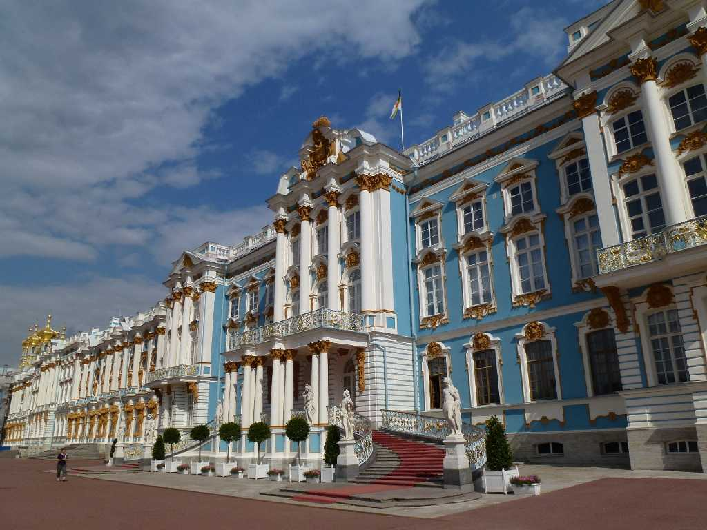
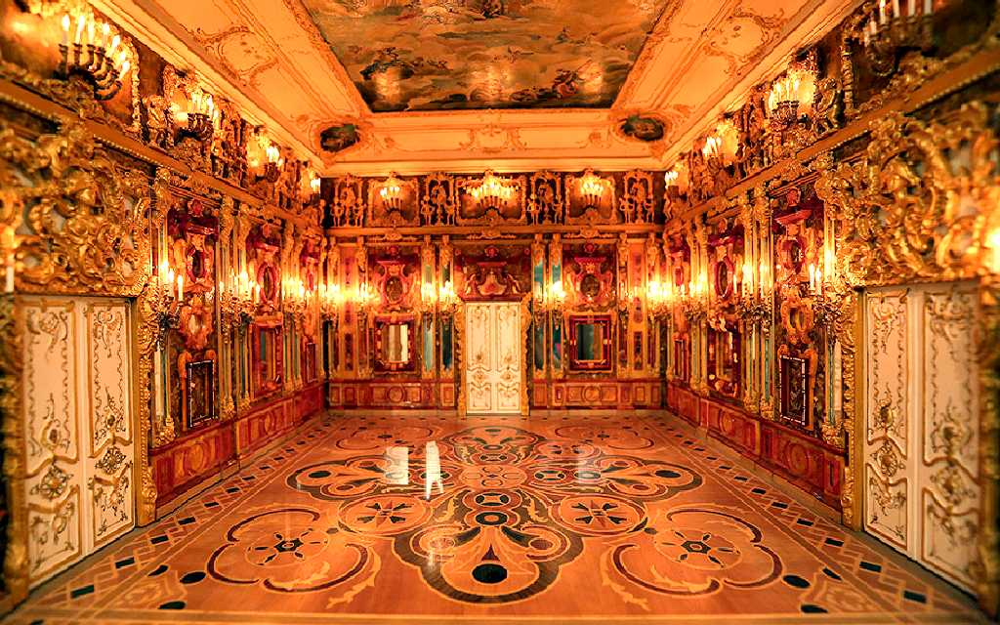
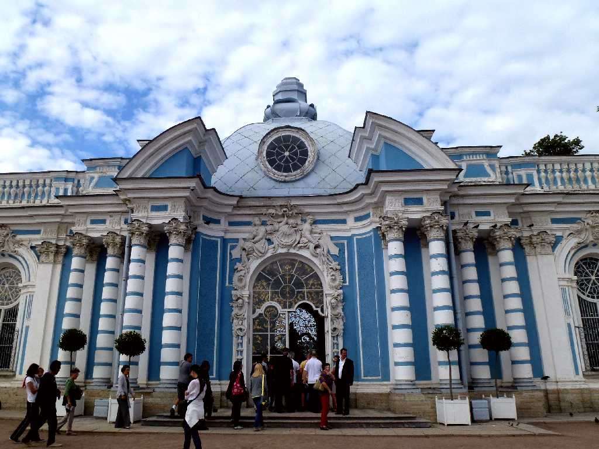
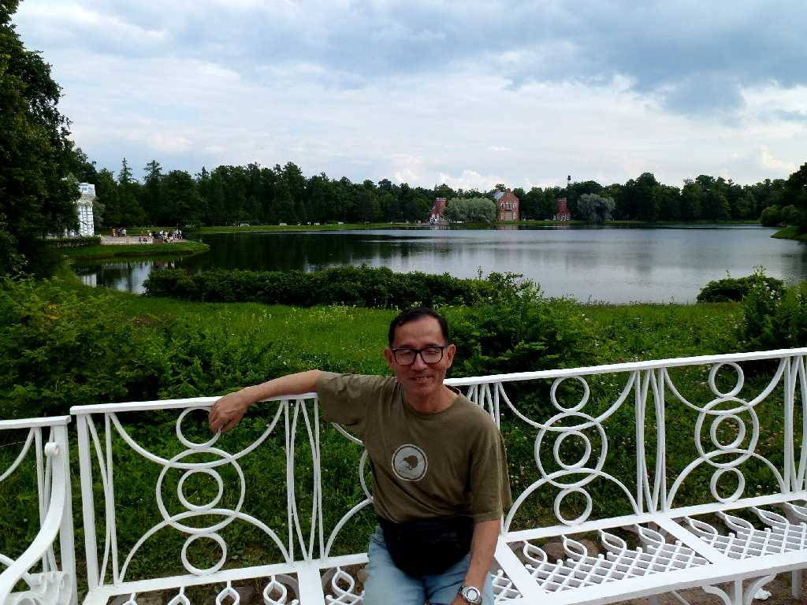
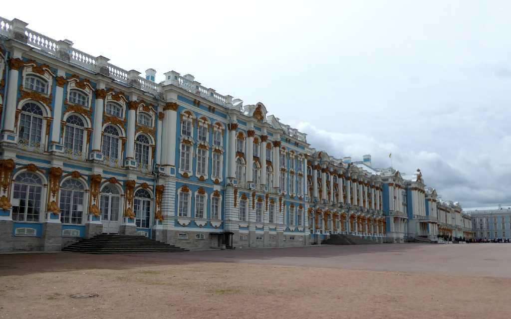
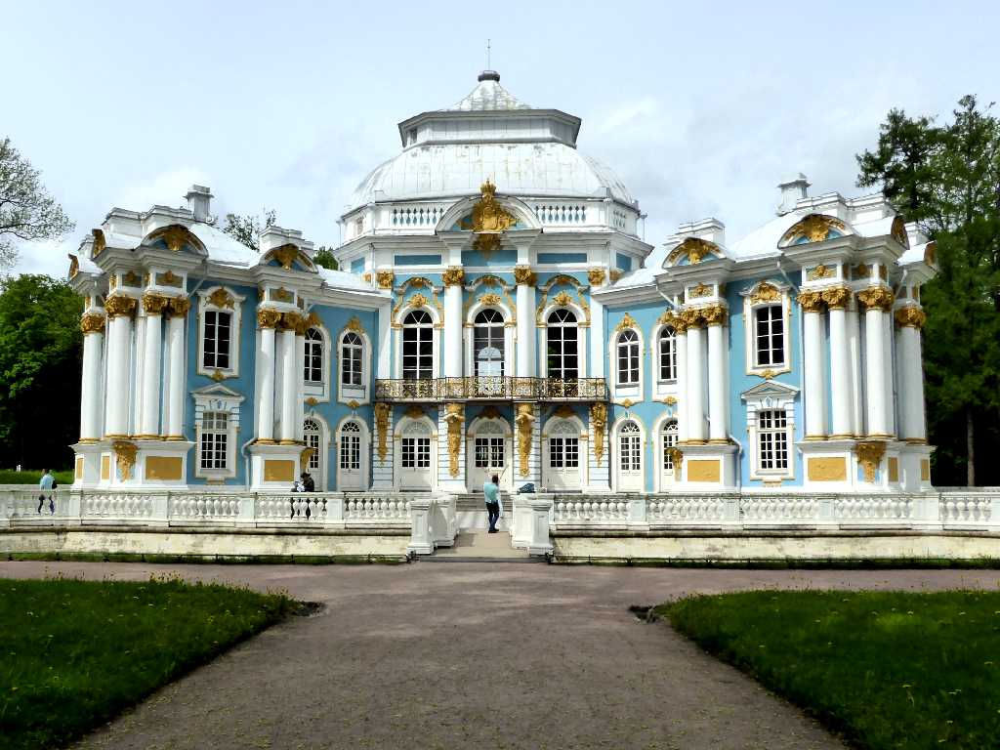
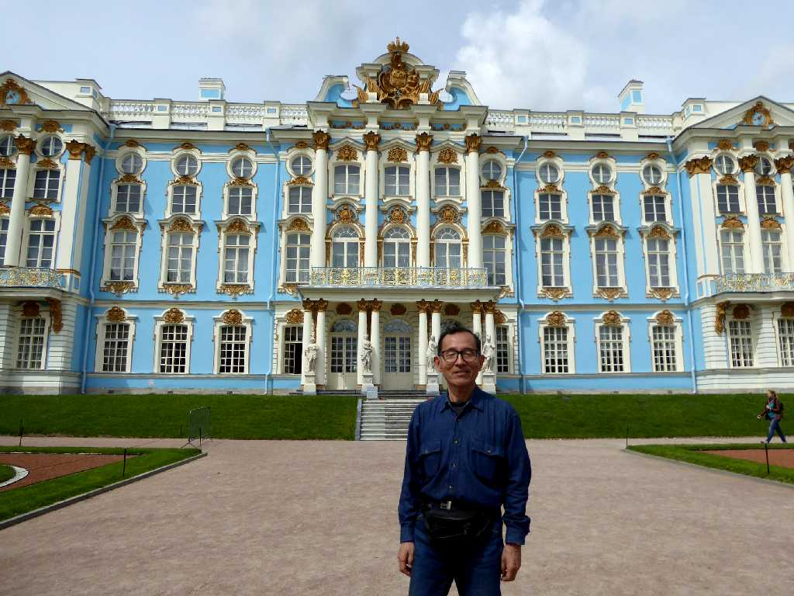

Catherine Palace Sankt Peterburg
８０日間世界一周鉄道の旅で１８日目 エカテリーナ宮殿は１７１７年にエカテリーナⅠ世が創らせた避暑のための離宮

Amber Room Catherine Palace
琥珀の間は１７７０年にエカテリーナⅡ世が冬の宮殿(エルミタージュ美術館)を飾っていた琥珀をエカテリーナ宮殿に移設して完成した

The Grotto Pavilion Catherine

July 11 2013 The Grotto Pavilion

Catherine Palace Sankt Peterburg
８０日間世界一周鉄道の旅で訪問以来４年ぶりの再訪問

The Hermitage Pavilion Catherine

June 12 2017 Catherine Palace